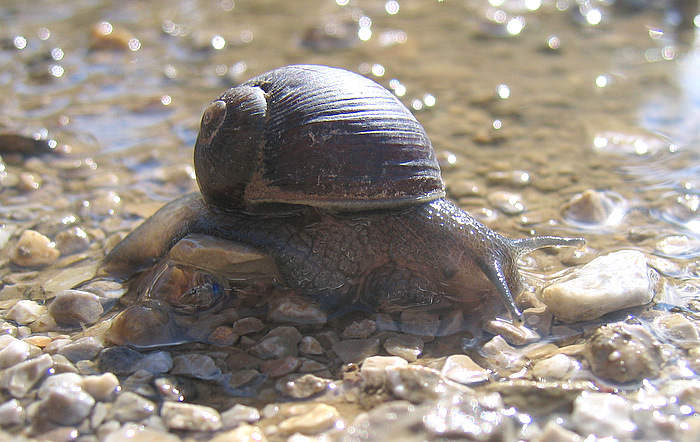
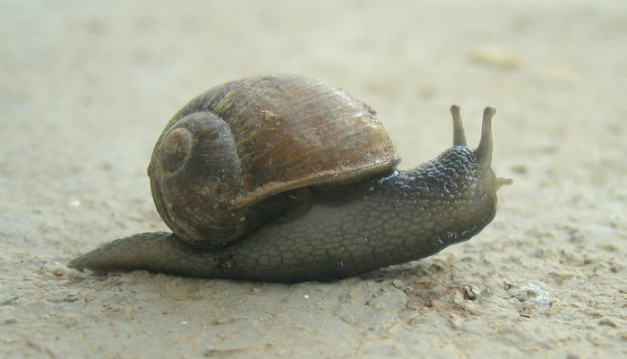
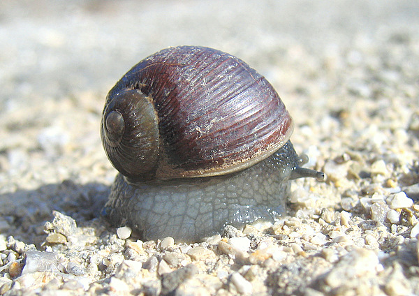
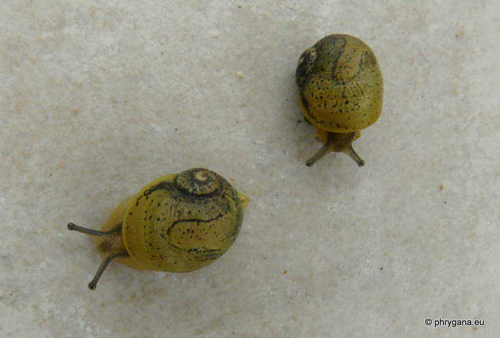
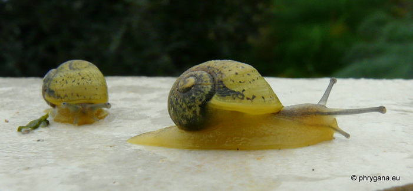

| PHRYGANA | Fauna | Flora | Galles | liste des espèces |
contact -
info - commentaires phrygana1 (at) gmail.com |
| Particularités crétoises | nouveautés | Mines | ressources naturelles |
| Cantareus apertus (Born 1778) |
| 64 | Fauna | HELICIDAE | Helicinae | Cantareus Risso 1826 |
|
 Cantareus apertus Agia Galini 27 octobre 2007 |
| Synonyme: Helix aperta |
| de: Grunzschnecke |
| La coquille est de couleur brun olive, assez fine, à 3 - 4 spires et une très large ouverture (diamètre de 25 - 28 x 20 - 24 mm). Le corps est gris bleuâtre-noirâtre à l'état adulte; à l'état juvenile, coquille (avec des points et lignes noires) et corps beige clair jaunâtre, tentacules gris clair |
| Les escargots se nourrissent de matières organiques fraîches au-dessus ou dans le sol: feuilles, écorces, fruits, racines. En période estivale sèche, il s'enterre jusquà 10-25 cm de profondeur, forme un épiphragme blanc et épais pour obturer l'ouverture. Il ressort dès les premières pluies d'automne. |
| Statut en Crète: indigène |
| Biotopes en Crète: parcs, vergers, vignobles, olivaies, bords des villages, plaines littorales. |
| Altitudes: 10 - 850 m |
| Distribution: Europe méridionale, Moyen-Orient, Iran |
| Note: Cantareus apertus est comestible et recherché à ce titre. |
|
 Cantareus apertus Agia galini 27 octobre 2007 |
|

Cantareus apertus Agia galini 27 octobre 2007 |
|
 Cantareus apertus Melambes (Agios Giorgos) 18 mars 2011 |
|
 Cantareus apertus Melambes (Agios Giorgos) 18 mars 2011 |
| 15 décembre 2012 |
| © paul fontaine -- © Phrygana.eu 2007 -- 2013 |